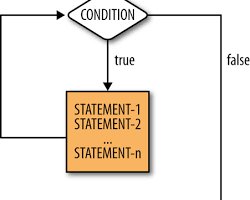
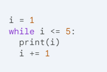
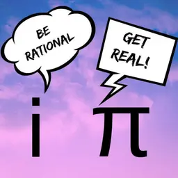
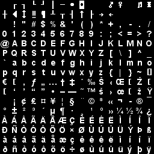
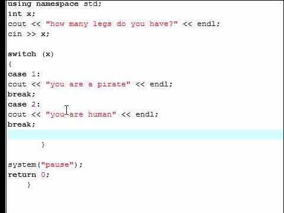
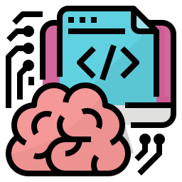
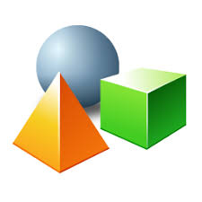
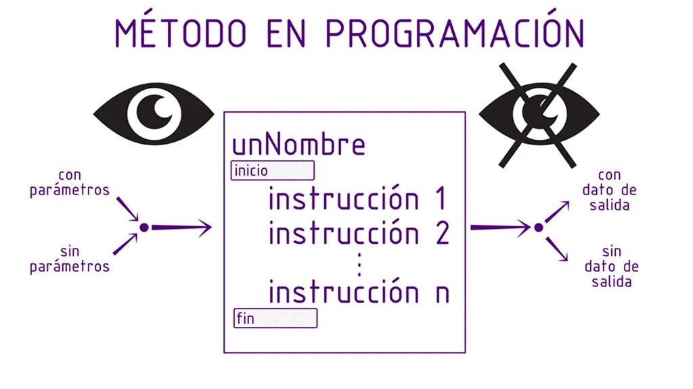
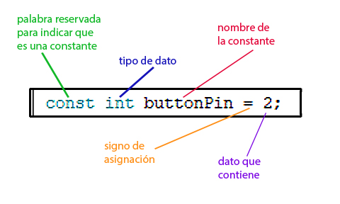

A continuación encontrarás las definiciones de las principales palabras y expresiones relacionadas con la asignatura de Pensamiento Algoritmico
Pseudocódigo
es una herramienta que se utiliza para planificar y estructurar algoritmos antes de escribir el código en un lenguaje de programación. Es una descripción informal y simplificada de un programa, escrita en lenguaje natural o cercano al humano, pero siguiendo una lógica estructurada.
Algoritmo
Un conjunto secuencial, lógico y finito de pasos diseñados para resolver un problema o realizar una tarea. Los algoritmos son esenciales en la programación, ya que representan la base lógica antes de convertirla en código.
Iteración
Proceso en el que una instrucción o conjunto de instrucciones se repite hasta que una condición se cumpla o deje de cumplirse. Utilizado para manejar tareas repetitivas, optimizando el tiempo y esfuerzo.
 Argumento
Dato que se pasa a una función o procedimiento al momento de su invocación. Los argumentos permiten personalizar las operaciones de una función según los valores recibidos.
Char
Es un tipo de dato que almacena un único carácter, como letras ('A'), números ('1') o símbolos ('%'). Los caracteres se codifican generalmente en ASCII o Unicode.
Float
Tipo de dato que representa números reales con decimales, usado para cálculos más precisos o para manejar valores continuos. Ejemplo: 3.1416.
Loop
Estructura que ejecuta un bloque de código repetidamente, controlado por una condición (Mientras) o un contador (Para). Facilita operaciones sobre listas o repeticiones controladas.
Estructura anidada
Organización de una estructura lógica (bucle o condicional) dentro de otra. Esto permite manejar procesos complejos dividiéndolos en pasos más pequeños y jerárquicos.
Switch-Case
Estructura que evalúa una variable y ejecuta diferentes bloques de código dependiendo de su valor. Es más eficiente que múltiples condicionales si hay muchas opciones.
Programacion:
Es la accion de programar que implica ordenar, estructurar o componer una serie de acciones cronologicas para cumplir un objetivo ,adems es el uso de lenguajes informarticos para imprimir en un sistema computacional funciones y procesos deseados .
codificación:
La codificación es el proceso de asignar símbolos, números o códigos a información para representarla de manera compacta y eficiente. En diferentes campos, la codificación tiene objetivos y enfoques distintos:
*Tipos de codificación:*
1. Codificación de texto: representa texto como secuencias de números o símbolos (ASCII, Unicode).
2. Codificación de imagen: reduce el tamaño de imágenes (JPEG, PNG).
3. Codificación de audio: comprime audio (MP3, WAV).
4. Codificación de video: comprime video (MPEG, H.264).
5. Codificación de datos: representa datos numéricos de manera eficiente (binario, hexadecimal).
6. Codificación de programación: escribir código fuente en lenguajes de programación (Java, Python).
Clase
Definición:
Es una plantilla o modelo que define las propiedades (atributos) y comportamientos (métodos) de los objetos que se crean a partir de ella.Uso en algoritmos:
Se utiliza en algoritmos orientados a objetos para organizar y reutilizar el código de forma modular. Ideal para problemas de modelado, como la gestión de inventarios o simulaciones.
Objeto
Definición:
Instancia de una clase, es decir, una representación concreta que utiliza la estructura definida por la clase.Uso en algoritmos:
Los objetos se utilizan en algoritmos para representar entidades reales, como personas, animales, objetos, etc. Ademas Es clave en algoritmos que gestionan múltiples elementos similares, como juegos (donde cada personaje es un objeto).
Encapsulamiento

Definición:
Técnica que oculta los detalles internos de una clase y controla el acceso a sus datos mediante métodos públicos.Uso en algoritmos:
El encapsulamiento permite asegurar la integridad de los datos y controlar el acceso a ellos, lo que puede ser útil para evitar errores y garantizar la seguridad de la información.Ademas es util para garantizar que los datos sensibles no se modifiquen accidentalmente y para mantener la integridad del sistema.
Método
Definición:
Una función que pertenece a una clase y define un comportamiento de sus objetos.Uso en algoritmos:
Los métodos son utilizados para realizar acciones sobre los objetos, como obtener datos, modificar datos, o realizar operaciones. Ademas es utilizado para encapsular el comportamiento de las clases y para controlar el acceso a los datos.
Ciclo
Definición:
Un ciclo es una estructura de control en programación que permite repetir un bloque de código un número determinado de veces o mientras se cumpla una condición. Los ciclos son esenciales para optimizar tareas repetitivas, evitando escribir el mismo código múltiples veces.Tipos de ciclos en algoritmos
Ciclo fijo: Se ejecuta un número predeterminado de veces.
►Ejemplo: Para o For.
Ciclo condicional: Se ejecuta mientras se cumpla una condición.
►Ejemplo: Mientras o While.
Ciclo infinito: No tiene un fin determinado y suele usarse en sistemas interactivos.
Constantes
Definición:
Una constante es un valor fijo que no cambia durante la ejecución de un programa. Se define al inicio y permanece inmutable, proporcionando seguridad y claridad en el código. Las constantes suelen usarse para representar valores universales, configuraciones o límites que no deben modificarse.Uso en algoritmos:
Las constantes son utilizadas para representar valores que no cambian durante la ejecución del programa, como el número de filas en una tabla, el nombre de un archivo, o el valor de un límite de ciclo. Ademas es util para garantizar que los valores no se modifiquen accidentalmente y para mantener la integridad del sistema.
Ejemplos
►Definir parámetros como la gravedad (9.8), π (3.1416) o tasas de interés.
►Evitar errores accidentales al modificar valores que deben ser estáticos.
